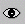
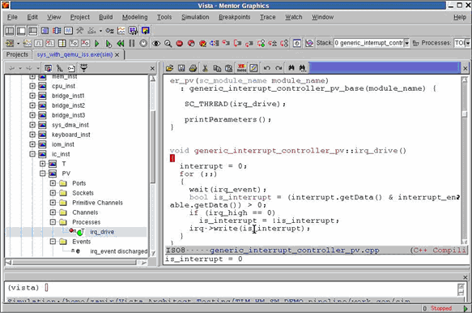
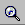

Watching Values
The Watch feature enables you to continuously monitor the changing values of selected objects (data class members and events) during simulation. To facilitate monitoring, the selected objects (taken from anywhere in the design) are copied to the Watch folder in the browser.
Adding Objects to the Watch List
This command adds one or more selected objects, or for that matter any part of the selected design hierarchy, to the Watch folder. To do so:
- Select the one or more such objects.
- Choose the Simulation > Watch > Add to Watches command or click the equivalent icon:

The selected objects are copied to the Watch folder in the browser.
Saving and Loading a Watch List
All of the objects currently residing in the Watch list can be saved as a file that can later be loaded. This eliminates the need to manually redefine these objects every time you begin a simulation set on a given design. Because you can create any number of watch list files for the same design, saving and loading different files can be a valuable debugging tool.
To save the currently defined objects as a Watch list file:
- Choose the Simulation > Watch > Save Watches command.
- In the dialog box now displayed, specify the directory location and name of the file that you are creating.
To load a previously-saved Watch list:
- Choose the Simulation > Watch > Load Watches command.
- In the dialog box now displayed, select the name of the Watch list file and click Open.
Deleting Objects from the Watch List
To remove one or more objects from the Watch list:
- Select the objects to be deleted from the Watch folder in the Browser.
- Choose the Simulation > Watch > Delete Watch command.
To entirely empty a Watch list:
- Select the Watch list in the Browser.
- Choose the Simulation > Watch > Delete All Watches command.
Viewing Local Variables
Vista allows you to select and evaluate a local variable of a thread or method in several ways, and attach it to the “Watch List” folder. You can also combine several variables and/or constants with arithmetic operators to generate an expression that can be evaluated. Once a variable is selected, you can instruct Vista to evaluate the specific variable instance, or any instance of that variable, whichever is in the current simulation scope.
To automatically display the value of a local variable:
- Switch to a specific thread or method. (Note that you can dive into a function called from the thread or method and inspect a local variable of the function).
- If focus is not currently on the text-editor area, click anywhere in the area.
- Move the mouse (“I”) cursor onto the variable.
The value is displayed in the pane below the code.
Figure 12‑10.
Displaying Local Variable Value

To select and inspect a local variable and add it to the Watch List:
- Stop simulation in a specific thread or method. (Note that you can dive into a function called from the thread or method and inspect a local variable of the function).
- Now enter the function by first setting a breakpoint in a process. Step through until the appropriate function call. Then dive into the function by clicking the appropriate icon:
- Select the local variable you wish to inspect.
- Click the Inspect command icon

or, from the “Watch”, choose Watch > Open Inspect. Note that, in the dialog box now opened, the selected variable is specified.
- Click “Evaluate” to view the current value of the variable.
- Click “Add to Watch” to add the variable to the “Watch folder”.
- If there is more than one instance of the module currently debugged, select the “Only in” check box, if you wish to view only a specific instance. When the “Only in” check box is checked, the full path name of the variable will be displayed in the dialog box and in the “Watch List” folder. (If you do not perform this step, during simulation the value of the local variable will change each time a different instance is being simulated.)
To acquire a local variable to the waveform window, once you have performed the above procedure:
- Select the local variable in one of two possible locations:
- In the Watch list that appears in the Browser, or
- In the list of local variables displayed for a process in the Simulation Control window.
- Choose the “Add to Wave” command from the right-mouse button menu.
Note that it is also possible to directly acquire a local variable to the waveform window from the code of a module. To do so:
- Within the code, select the name of the local variable to be acquired.
- Choose the “Add to Wave” command from the right-mouse button menu.